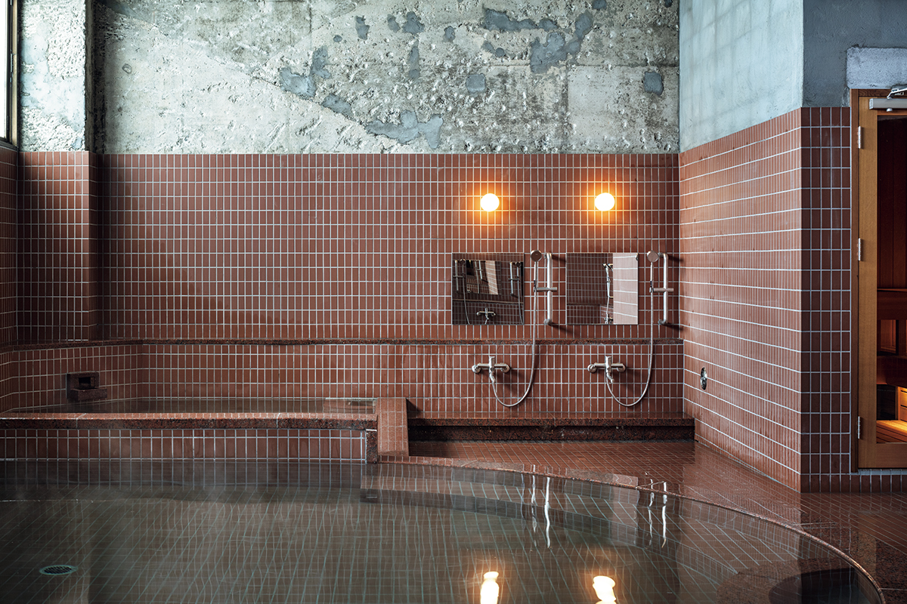
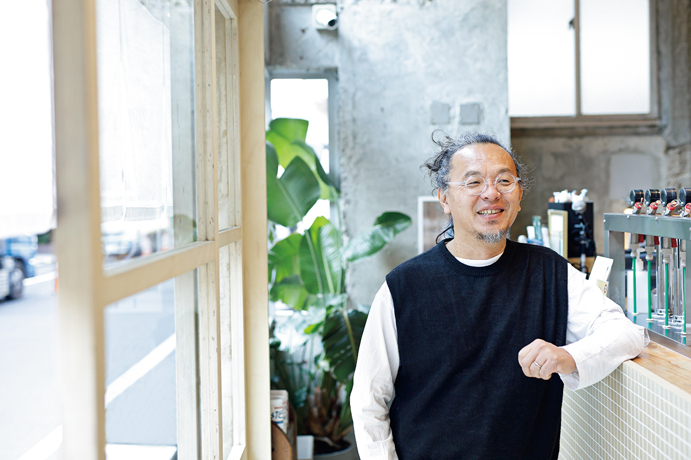

Префектура Кагава · Сёдосима · баня
Сима-ю: баня, которая сводит путешественников с островитянами

На Сёдосиме архитектор Дзё Нагасака обновил общественную баню так, чтобы она работала на весь остров: банный зал «Сима-ю», столовая «Симамэси» и гостиница «Симахаку» растут поэтапно, в темпе самой островной жизни.
Замысел
Три объекта вместо одного отеля
Баня Сима-ю открылась в апреле 2024 года: это перестроенный большой зал отеля «Сёдосима Орхид». «Смысл не в том, чтобы сосредоточить все удобства в одном месте, а в том, чтобы оживить весь остров, поэтому мы устроили три разных объекта: баню Сима-ю, столовую Симамэси и гостиницу Симахаку», рассказывает Дзё Нагасака. «Развитие идёт поэтапно, в спокойном темпе самой островной жизни, так что ожидания подогреваются, и это хорошо».
Сима-ю, открывшийся первым из трёх объектов, уже стал местом отдыха не только для приезжих, но и для самих островитян. «Когда столовая и гостиница будут достроены, все три объекта будут существовать не по отдельности, а в перекрёстке: островитяне и путешественники будут пересекаться, и впечатления города и людей сольются воедино».
Такой подход сказался и на отделке: Нагасака подбирает материалы и детали с оглядкой на местную среду.

Банный зал перестроили в духе «предельного вычитания»: старую отделку сняли до голого каркаса, и ниже линии 2 100 мм от пола начинается один мир, выше другой. В купели запущен источник «Сио-но-ю»: хлоридная вода, первый источник, открытый на Сёдосиме, а рядом поставили финскую сауну: это первая на острове настоящая сауна с процедурой лёйлю, когда над камнями льют воду и пар поднимают полотенцем.
Баня Сима-ю
- Адрес
- префектура Кагава, уезд Сёдзу, посёлок Тоносё, Ко, 5165-216, внутри отеля «Сёдосима Орхид»
- Телефон
- +81 879-62-5001 (общая стойка гостиницы)
- Часы работы
- 14:00–23:00
- Выходные
- нерегулярные
- Цены
- однодневный визит: взрослые 1 200 иен, школьники 600 иен; постояльцы отеля «Сёдосима Орхид»: взрослые 800 иен, школьники 400 иен; для островитян действует своя скидка